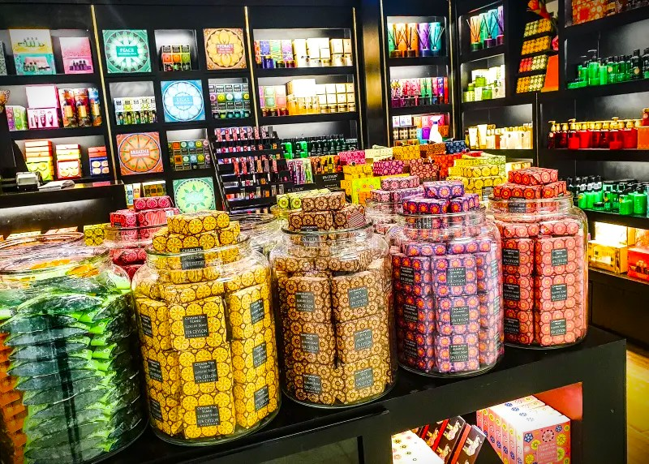

L’esprit Sillage
Revenir aux choses simples.
Sillage est une marque imaginée par Marc Couget en 1995. Le boutique ouvre quelques mois plus tard en 1996 à Paris.
Notre idée : donner une place à ces gestes discrets, et au plaisir de les répéter.
Cette histoire est fictive. Elle sert d’exemple pour présenter votre propre marque.
Rencontrer L’Essentiel